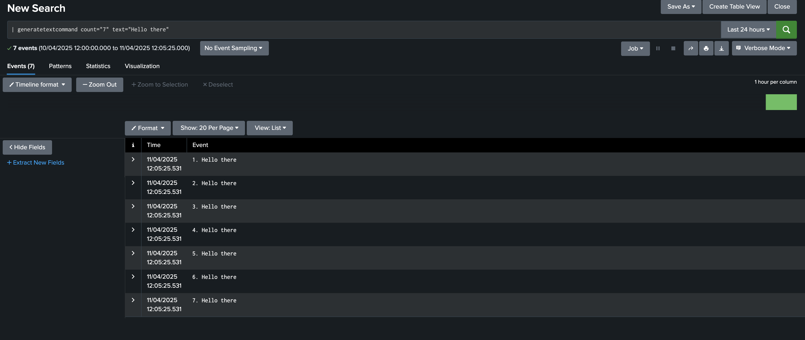

Custom Search Command¶
Custom search commands are user-defined SPL (Splunk Search Processing Language) commands that enable users to add custom functionality to their Splunk searches.
There are 4 types of Custom search commands:
- Generating
- Streaming
- Transforming
- Dataset processing
Note: Eventing commands are being referred as Dataset processing commands reference.
Generation of custom search command¶
A new tag has been introduced in globalConfig (same indent level as of meta tag) named customSearchCommand where you need to define the configuration for the custom search command.
Minimal definition¶
"customSearchCommand": [
{
"commandName": "mycommandname",
"fileName": "mycommandlogic.py",
"commandType": "generating",
"arguments": [
{
"name": "argument_name",
"validate": {
"type": "Fieldname"
},
"required": true
},
{
"name": "argument_two"
}
]
}
]
This configuration will generate a template Python file named mycommandname.py, which imports logic from the mycommandlogic.py file and automatically updates the commands.conf file as shown below:
[mycommandname]
filename = mycommandname.py
chunked = true
python.version = python3
NOTE:
If the file specified in the fileName field does not exist in the <YOUR_ADDON/bin> directory, the build will fail.
Attributes for customSearchCommand tag¶
| Property | Type | Description |
|---|---|---|
| commandName* | string | Name of the custom search command |
| fileName* | string | Name of the Python file which contains logic of custom search command |
| commandType* | string | Specify type of custom search command. Three types of commands are allowed, streaming,generating and dataset processing. |
| arguments* | array[objects] | Arguments which can be passed to custom search command. |
| requiredSearchAssistant | boolean | Specifies whether search assistance is required for the custom search command. Default: false. |
| usage | string | Defines the usage of custom search command. It can be one of public, private and deprecated. |
| description | string | Provide description of the custom search command. |
| syntax | string | Provide syntax for custom search command |
To generate a custom search command, the following attributes must be defined in globalConfig: commandName, commandType, fileName, and arguments. Based on the provided commandType, UCC will generate a template Python file and integrate the user-defined logic into it.
If requiredSearchAssistant is set to True, the syntax, description, and usage attributes are mandatory, as they are essential for generating searchbnf.conf. For more information about these attributes please refer to the searchbnf.conf docs
NOTE: The user-defined Python file must include specific functions based on the command type:
- For
Generatingcommand, the Python file must include ageneratefunction. - For
Streamingcommand, the Python file must include astreamfunction. - For
Dataset processingcommand, the Python file must include atransformfunction.
Arguments¶
| Property | Type | Description |
|---|---|---|
| name* | string | Name of the argument |
| defaultValue | string/number | Default value of the argument. |
| required | boolean | Specify if the argument is required or not. |
| validate | object | Specify validation for the argument. It can be any of Integer, Float, Boolean, RegularExpression or FieldName. |
UCC currently supports five types of validations provided by splunklib library:
- IntegerValidator
- you can optionally define
minimumandmaximumproperties.
- you can optionally define
- FloatValidator
- you can optionally define
minimumandmaximumproperties.
- you can optionally define
- BooleanValidator
- no additional properties required.
- RegularExpressionValidator
- no additional properties required.
- FieldnameValidator
- no additional properties required.
For more information, refer splunklib API docs
For example:
"arguments": [
{
"name": "count",
"required": true,
"validate": {
"type": "Integer",
"minimum": 1,
"maximum": 10
},
"default": 5
},
{
"name": "test",
"required": true,
"validate": {
"type": "Fieldname"
}
},
{
"name": "percent",
"validate": {
"type": "Float",
"minimum": "85.5"
}
}
]
Example¶
{
"meta": {...}
"customSearchCommand": [
{
"commandName": "generatetextcommand",
"fileName": "generatetext.py",
"commandType": "generating",
"requiredSearchAssistant": true,
"description": "This command generates COUNT occurrences of a TEXT string.",
"syntax": "generatetextcommand count=<event_count> text=<string>",
"usage": "public",
"arguments": [
{
"name": "count",
"required": true,
"validate": {
"type": "Integer",
"minimum": 5,
"maximum": 10
}
},
{
"name": "text",
"required": true
}
]
},
],
"pages": {...}
}
Generated python file named generatetextcommand.py:
import sys
import import_declare_test
from splunklib.searchcommands import \
dispatch, GeneratingCommand, Configuration, Option, validators
from generatetext import generate
@Configuration()
class GeneratetextcommandCommand(GeneratingCommand):
"""
##Syntax
generatetextcommand count=<event_count> text=<string>
##Description
This command generates COUNT occurrences of a TEXT string.
"""
count = Option(name='count', require=True, validate=validators.Integer(minimum=5, maximum=10))
text = Option(name='text', require=True)
def generate(self):
return generate(self)
dispatch(GeneratetextcommandCommand, sys.argv, sys.stdin, sys.stdout, __name__)
Generated stanza in commands.conf file
[generatetextcommand]
filename = generatetextcommand.py
chunked = true
python.version = python3
Generated stanza in searchbnf.conf file
[generatetextcommand]
syntax = generatetextcommand count=<event_count> text=<string>
description = This command generates COUNT occurrences of a TEXT string.
usage = public
Output¶
This is how search result looks like:
